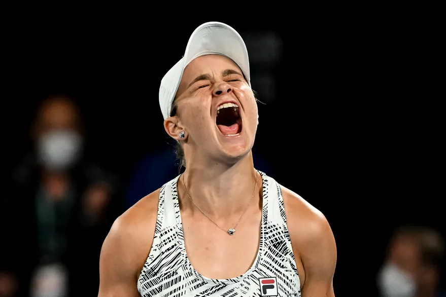
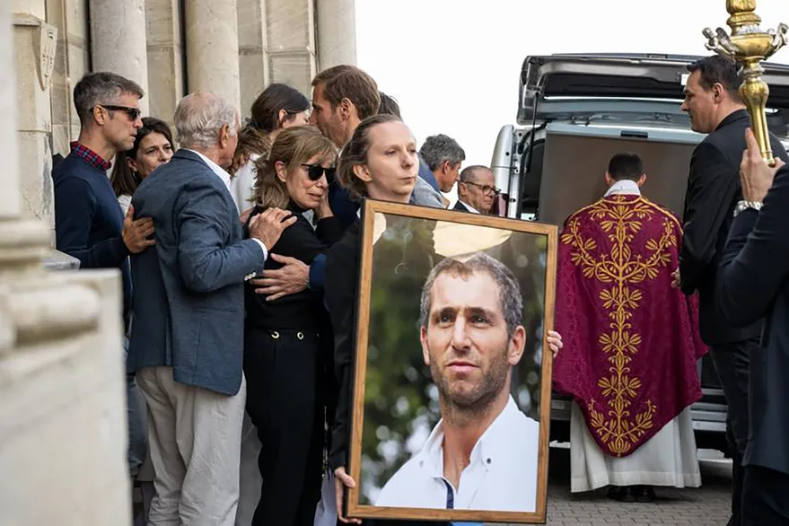

Tremendo gol de Di Maria para poner el 2-0 frente a Venezuela!
Diez minutos le bastaron a Ángel Di María para marcar un gol ante Venezuela en el 3-0 de la selección argentina. El extremo de la selección argentina ingresó en el segundo tiempo por Alexis Mac Allister y revolucionó al equipo de Lionel Scaloni que había mermado en su intensidad y, si bien dominaba la pelota, estaba lejos de generar ocasiones frente al arco rival. El Fideo fue el autor del 2 a 0 en La Bombonera en una acción que recordó su gran tanto en el Maracaná frente a Brasil en el título obtenido por el combinado nacional en 2021. Es que fue Rodrigo De Paul el que levantó la cabeza y filtró un pase aéreo a la espalda del marcador izquierdo venezolano para el pique al vacío del jugador del París Saint-Germain (PSG).
Mick Shumagger sufrió tremedno accidente!
Mick Schumacher sufrió un grave accidente este sábado en la clasificación para el Gran Premio de Arabia Saudita. El piloto de Fórmula 1, hijo del siete veces campeón Michael Schumacher, estuvo en observación durante algunas horas en un hospital. Por suerte se encuentra en perfecto estado. El auto del Haas se desestabilizó sobre uno de los pianos de la curva 12 del circuito de Jeddah y el piloto alemán perdió totalmente el control del vehículo provocando prácticamente una destrucción total. Afortunadamente el hijo del siete veces campeón de la Fórmula 1 no sufrió consecuencias físicas y todo quedó en un enorme susto.
El sorpresivo retiro de Ashleigh Barty
La despedida de Federico Aramurú
A una semana de su asesinato, artero, inexplicable, absurdo, en las calles del barrio latino en París, fue un sábado de lágrimas, despedida y aplausos sinceros en honor a Federico Martín Aramburú . En Europa y en la Argentina, unidos por el recuerdo de un personaje entrañable, amiguero, compañero. Que tenía 42 años, su propia familia, con María Codino, su mujer, y sus dos hijas (Justina y Trinidad), y que desarrollaban una vida normal en Biarritz, en pleno país vasco, al sudoeste francés. Allí donde el exintegrante del CASI y de los Pumas se había afincado luego de vestir la camiseta del club local.